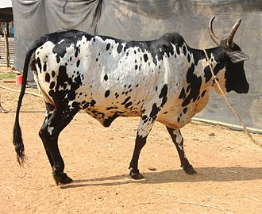

Dangi
Weight:
220 to 300 pounds
Height :
34 to 35 inche
Length:
30 to 36 inches
Color:
solid colors such as black, brown, or sometimes a reddish-brown
Longevity:
10 – 15 years.
Dangi personality
Hardy and Resilient: Dangi cows are well-adapted to the hilly terrains and challenging environmental conditions of the Malnad region. They exhibit resilience and toughness, enabling them to thrive in rugged landscapes with limited resources.
Gentle Temperament: Dangi cows typically have a gentle and calm temperament, making them easy to handle and work with. This docile nature is beneficial for traditional herding practices and interactions with humans.
Charolais cows are known for their maternal instincts and can be protective of their calves. They are also known to be quite social animals, often forming strong bonds within their herds. Additionally, Charolais cattle are known for their intelligence and can be trained to some extent, particularly for handling and management purposes.
What to expect
1.Adaptability to Hilly Terrain: Dangi cows are well-adapted to the hilly terrains of the Malnad region in Karnataka, India. They have evolved to thrive in rugged landscapes with limited resources, making them suitable for grazing in areas where other breeds might struggle.
2.Small to Medium Size: Dangi cows are typically small to medium-sized cattle. Their compact build and sturdy frame enable them to maneuver effectively in mountainous terrain and dense vegetation.
3.Dual-Purpose Usage: Dangi cows are valued for their versatility and can be utilized for both milk production and draught purposes. They provide a moderate amount of milk, which is often used for household consumption or local dairy products.
4.Hardiness and Resilience: These cattle exhibit hardiness and resilience, capable of withstanding harsh environmental conditions such as extreme temperatures and limited forage availability. They have developed survival instincts that help them thrive in challenging landscapes.
5.Gentle Temperament: Dangi cows are known for their gentle and docile temperament, making them easy to handle and work with. Their calm demeanor is beneficial for traditional herding practices and interactions with humans.
History of the Dangi
Ancient Origins: The Dangi cow is believed to have ancient origins, with its ancestry dating back to the indigenous cattle breeds of the Indian subcontinent. Over centuries, these cattle adapted to the specific environmental conditions of the Malnad region, developing traits suited to its hilly terrain and tropical climate..
Traditional Husbandry Practices: For generations, the indigenous communities of the Malnad region have practiced traditional agriculture and animal husbandry. Dangi cows have been an integral part of this agrarian system, providing milk for household consumption and serving as draught animals for plowing fields and transporting goods.
Selective Breeding and Development: Over time, farmers in the Malnad region selectively bred Dangi cows to enhance desirable traits such as adaptability, hardiness, and milk production. While the breed's primary purpose is not intensive milk production like some specialized dairy breeds, it provides a moderate amount of milk suitable for local consumption and dairy products.
Cultural Significance: Dangi cows hold cultural significance for the communities in the Malnad region, with traditional rituals and practices often associated with them. They are considered sacred animals in Hinduism, and their presence is integral to religious ceremonies and festivities in rural areas.